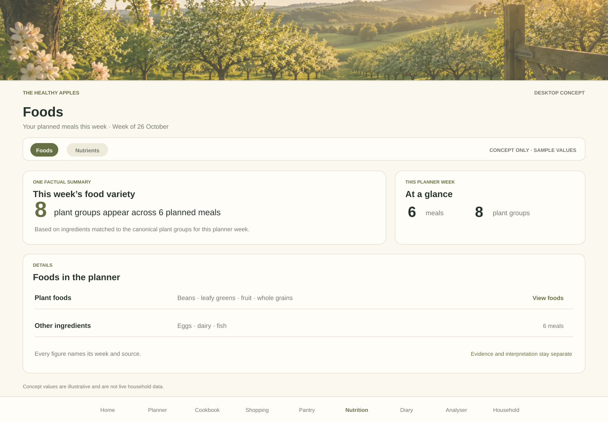
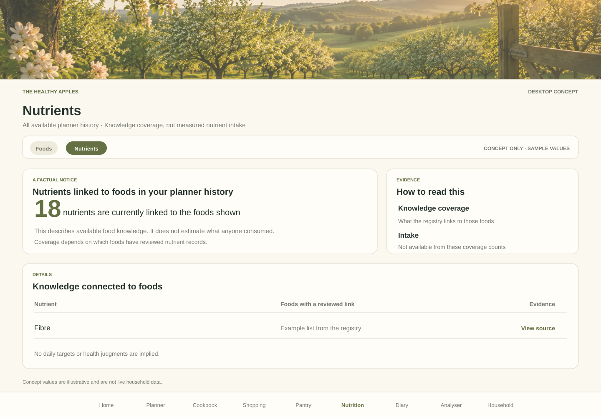
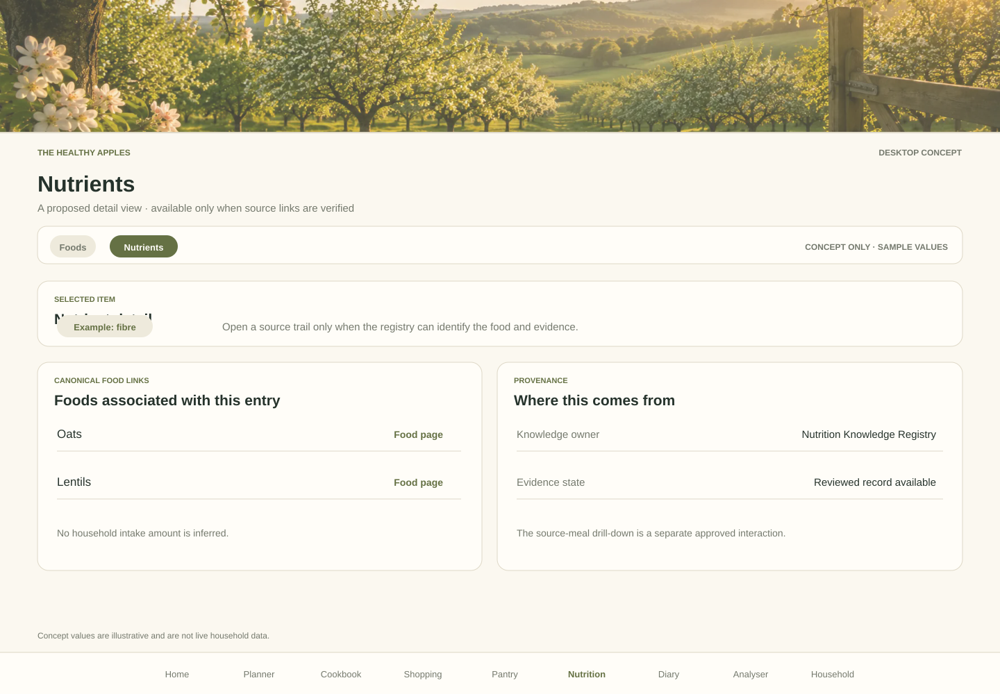
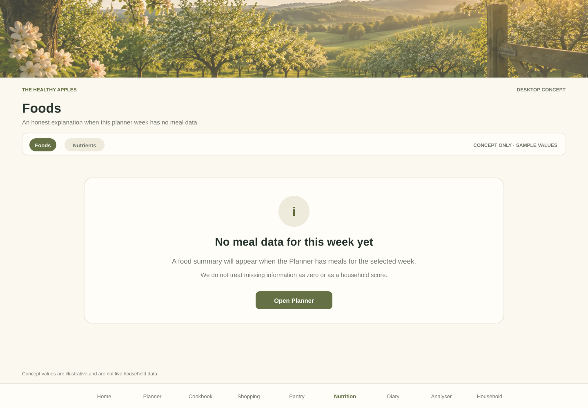
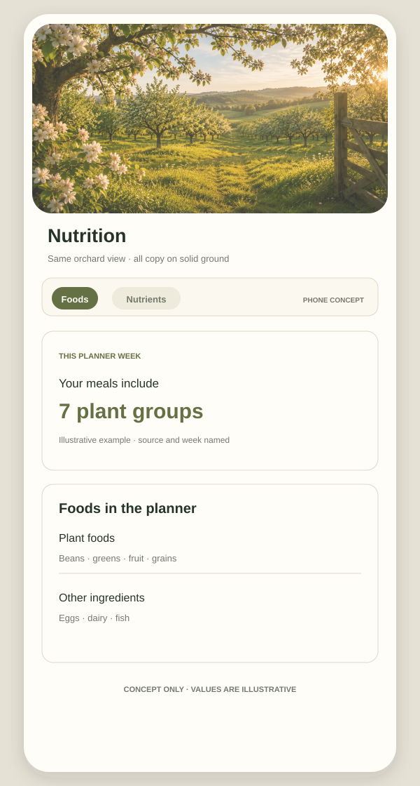

Concepts only. Numbers and household examples are illustrative, not live data or an approved final design. The garden image is an existing repository asset; all text and data remain on solid surfaces.




